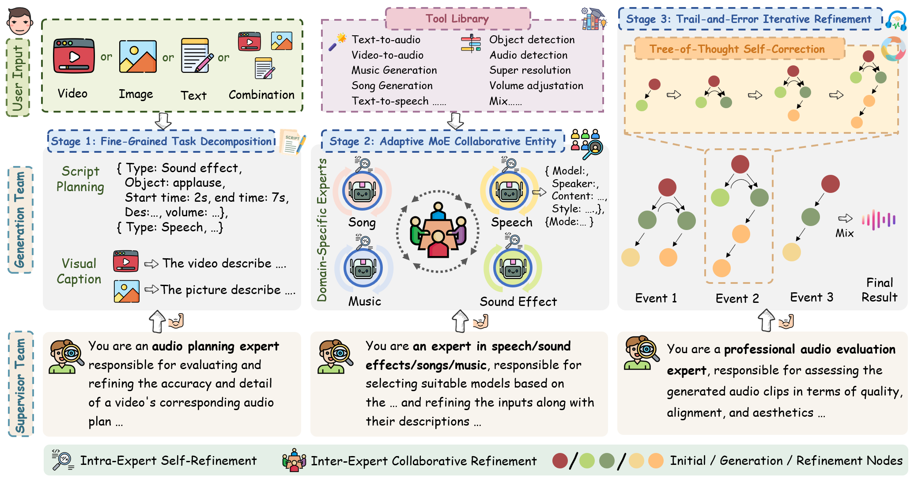
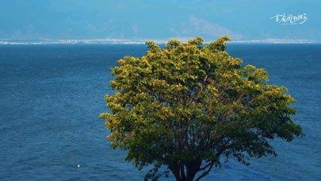

AudioGenie: A Training-Free Multi-Agent Framework for Diverse Multimodality-to-Multiaudio Generation
[Paper] [Dataset]
Anonymous authors
Abstract: Multimodality-to-Multiaudio (MM2MA) generation faces significant challenges in synthesizing diverse and contextually aligned audio types (e.g., sound effects, speech, music, and songs) from multimodal inputs (e.g., video, text, images), owing to the scarcity of high-quality paired datasets and the lack of robust multi-task learning frameworks. Recently, multi-agent system shows great potential in tackling the above issues. However, directly applying it to MM2MA task presents three critical challenges: (1) inadequate fine-grained understanding of multimodal inputs (especially for video), (2) the inability of single models to handle diverse audio events, and (3) the absence of self-correction mechanisms for reliable outputs. To this end, we propose AudioGenie, a novel training-free multi-agent system featuring a dual-layer architecture with a generation team and a supervisor team. For the generation team, a fine-grained task decomposition and an adaptive Mixture-of-Experts (MoE) collaborative entity are designed for dynamic model selection, and a trial-and-error iterative refinement module is designed for self-correction. The supervisor team ensures temporal-spatial consistency and verifies outputs through feedback loops. Moreover, we build MA-Bench, the first benchmark for MM2MA tasks, comprising 198 annotated videos with multi-type audios. Experiments demonstrate that our AudioGenie outperforms state-of-the-art (SOTA) methods across 12 metrics in 8 tasks. User study further validate the effectiveness of the proposed method in terms of quality, accuracy, alignment, and aesthetic.
AudioGenie Framework

Experiment
Video to Multiaudio Generation
Comparison with Other Methods
| Seeing and Hearing | AudioX | Ours (w/o background music) | Ours (w background music) |
|---|---|---|---|
| - The script does not contain background planning. - |
More Results
| Ours (w/o background music) | Ours (w background music) | Ours (w/o background music) | Ours (w background music) |
|---|---|---|---|
Text to Multiaudio Generation
| Text Prompt | Affusion | MMAudio | Ours |
|---|---|---|---|
|
莉莉小心翼翼地踩在树叶上走进森林，惊讶地说“哇，天哪！好漂亮”。远处偶尔传来的虫鸣声，背景是一段轻柔而神秘的背景音乐，带有弦乐和木琴的旋律，营造出梦幻般的氛围。 Lily carefully steps on leaves as she enters the forest, exclaiming, “Wow, this is so beautiful!” Distant insect chirps occasionally echo in the background, while a gentle and mysterious melody with strings and xylophone creates a dreamlike ambience. |
|||
|
海浪翻涌，一名男子伫立海岸，低声吟唱：“海是故乡的蓝，倒映天与人间。我沿着光阴的浪，寻你无边无岸。”他的歌声在风中飘荡，透出一丝丝愁绪，仿佛承载着对远方家乡的无尽思念。 The waves surge as a man stands on the shore, softly singing: “The sea is the blue of home, reflecting sky and land. I follow time’s tide, searching for you without limit or shore.” His voice drifts in the wind, hinting at sorrow and conveying an endless longing for his distant homeland. |
Image to Multiaudio Generation
| Input Image | See2Sound | SSV2A | Ours |
|---|---|---|---|
|  |
|||
Video+Text to Multiaudio Generation
| Input Video | Input Text | Ours |
|---|---|---|
|
The background music features a singer performing "And you let her go, oh~ oh~ oh~." |
||
|
繁华的商业街，街头艺人在弹唱歌曲《成都》，歌词是"让我感到为难的，是挣扎的自由"。行人在围观鼓掌欢呼，天空中放着烟花。 On a bustling commercial street, a street performer sang "Chengdu," with the lyrics, "What troubles me is the struggle for freedom." Passersby gathered, clapping and cheering, while fireworks lit up the sky, blending with the vibrant scene below. |
||
|
李白有感而发，作诗"大鹏一日同风起,扶摇直上九万里"。 Li Bai, inspired by his feelings, composed the verse: "A great roc soars with the wind in one day, ascending ninety thousand li." |
||
|
诗人带着不甘回忆道："你我年少相逢，都有凌云之志"。 The poet recalls with regret: "When we met in our youth, we both had lofty ambitions." |
||
|
李白豪迈地抒发内心的情感"两岸猿声啼不住，轻舟已过万重山!" Li Bai boldly expresses his emotions: "Cries of apes echo on both banks, yet the light boat has already passed countless mountains!" |
||
|
The person in the scene sings, "Something is familiar, like a dream I can reach but not quite hold. I can sense you there, like a friend I've always known." |
||
|
背景是一段民谣弹唱，歌词是“星空洒落山间，映照你侧脸。夜风穿过窗沿，山丘沉睡，我们奔向旷野。” The background features a folk song, with lyrics: "The starlit sky falls over the mountains, illuminating your profile. The night wind flows through the window, the hills sleep, and we run toward the wilderness." |
Image+Text to Multiaudio Generation
| Input Image | Input Text | Ours |
|---|---|---|
|
背景是一段歌曲"时间它不懂疲倦，带走一切只剩怀念。我站在落叶之间，看秋天悄悄走远。" The background features a song with the lyrics: "Time never tires, taking everything away and leaving only memories. I stand among fallen leaves, watching autumn quietly fade away." |
Disclaimer
The content provided above is for academic purposes only and is intended to demonstrate technical capabilities. If you have any concerns, please contact us.